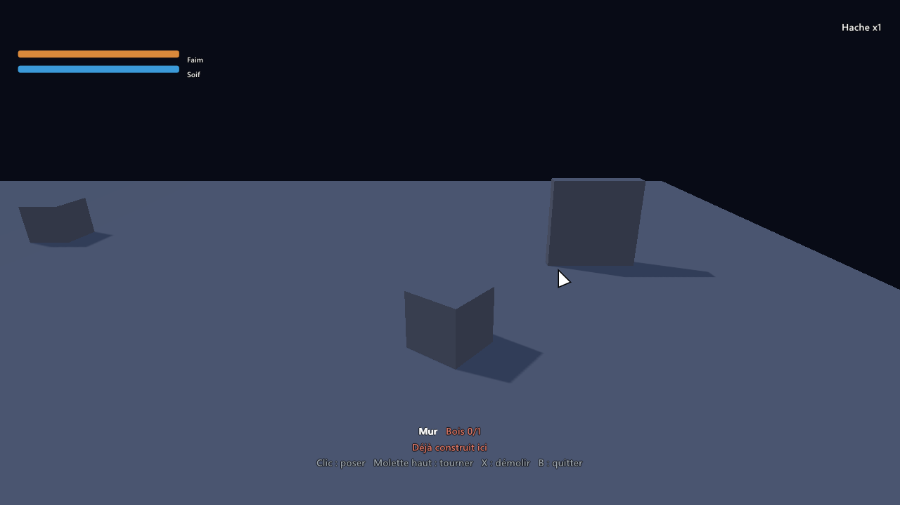

Faire un jeu de survie¶
Un jeu de survie se joue avec ce qu'on récolte : on coupe des arbres et on casse des rochers, on fabrique ses outils, on se construit un abri, on mange et on boit pour ne pas mourir, et les nuits passent. WorldMint sait déjà faire chacune de ces parties : vous les demandez à l'agent avec vos mots, il assemble les systèmes et les règle pour votre jeu, sans rien programmer.

Le plus simple : l'assistant de création¶
Dans Jeu > Assistant de création, cochez Survie (ou Récolte et fabrication) dans le genre. Une étape La survie s'ajoute :
- ce dont le personnage a besoin : manger, boire, dormir ;
- fabriquer des objets, et quoi ;
- construire un abri, et comment se posent les pièces (sur une grille, ou librement).
Tout est coché par défaut ; décochez ce que votre jeu ne veut pas. Des jours et des nuits, et la durée d'une journée entière (10, 20 ou 40 minutes), se demandent à l'étape L'ambiance, pour tous les jeux : pour un jeu de survie ou de récolte, la réponse est déjà Oui. À la fin, la demande envoyée à l'agent cite les systèmes à activer.
Les cinq systèmes¶
| Système | Ce qu'il fait | Ce que voit le joueur |
|---|---|---|
| Collecte | Posé sur ce qui se récolte (un arbre, un rocher, un buisson, toute une sorte de plantes) : le nombre de coups, ce qu'il donne, l'outil qu'il faut (la hache coupe le bois), et s'il repousse. Ce qui demande un outil se frappe avec l'attaque, l'outil tenu en main | L'invite « Clic : Couper 2/3 », puis « +3 Bois » |
| Inventaire | Ce que porte le joueur, et la barre des objets en main en bas de l'écran : la hache tenue apparaît dans la main du personnage | La barre, la case choisie, la hache dans la main |
| Fabrication | Les recettes : une ligne « Recette » (ce qu'elle donne) suivie de ses ingrédients. Un ingrédient peut être un outil qu'on garde (un marteau). Une recette peut demander un établi : un objet du monde qui porte ce système, comme un feu de camp ou une forge | La fenêtre de fabrication (C), devant un établi (E) avec ses recettes en plus |
| Construction | Les pièces : une ligne « Pièce » (son nom et son modèle, un objet caché de la scène) suivie de son coût. La pièce se pose debout sur ce qui est visé, mesurée sur son modèle, quel qu'il soit | Le mode construction (B) : un aperçu là où l'on vise, qui clignote là où on ne peut pas poser. Avec un personnage, on vise avec la vue (le centre de l'écran) et la caméra tourne toujours ; vu de haut, avec le curseur |
| Besoins | La faim, la soif, la fatigue, ou ce que vous voulez : chacun baisse avec le temps (plus vite en courant) ; à zéro, le joueur perd de la vie. Les aliments de l'inventaire les remontent, comme une source du monde (un puits, un lit) ou une règle du Déclencheur (« Remplir un besoin »). Chaque besoin s'éteint sans perdre ses réglages (sa case « Actif ») | Une barre par besoin allumé, sous la barre de vie |
| Jour et nuit | Le soleil se lève, traverse le ciel et se couche ; la nuit est plus sombre et bleutée. Le plein jour est la lumière de votre scène telle que vous l'avez réglée | Le ciel et la lumière qui changent ; une horloge si vous la voulez |
Chacun garde son état dans une sauvegarde de partie : les coups déjà portés et le temps avant qu'un arbre repousse, les pièces construites, chaque besoin, le jour et l'heure.
Jouer¶
| Touche (manette) | Ce qu'elle fait |
|---|---|
| 1 à 9, molette (←, qui fait le tour des cases) | Choisir ce qu'on tient en main, dans la barre ; la touche de la case choisie range l'objet |
| Clic (X) | Frapper : couper l'arbre ou casser le rocher, l'outil en main (la hache, la pioche) |
| E (Y) | Cueillir à mains nues (des baies), utiliser un établi, boire à un puits, dormir dans un lit |
| C (stick gauche enfoncé) | Ouvrir ou fermer la fabrication |
| I (Back) | L'inventaire : un clic sur un aliment le mange ou le boit |
| B (RB) | Entrer dans le mode construction, ou en sortir |
| Clic (X) | Poser la pièce, là où l'on vise : le centre de l'écran avec un personnage, le curseur vu de haut. Le combat ne frappe pas pendant le mode |
| Molette (stick droit enfoncé) | Tourner la pièce |
| Q (←), ou 1 à 9 | Changer de pièce |
| X (B) | Démolir la pièce visée, qui rend une part de son coût |
Toutes ces touches se changent dans le panneau Commandes du jeu.
Ce que vous pouvez demander à l'agent¶
- « Les arbres donnent 3 bois en 4 coups de hache, et repoussent au bout de 5 minutes. »
- « Une hache se fabrique avec 3 bois et 2 pierres ; la viande se cuit au feu de camp. »
- « Je construis des murs et un sol en bois, sur une grille ; un mur coûte 4 bois. »
- « J'ai faim au bout de 20 minutes et soif au bout de 10 ; une pomme remonte la faim de 30. »
- « Une journée dure 20 minutes ; les lanternes s'allument la nuit ; les loups sortent la nuit. »
- « Je dors dans le lit pour passer la nuit. »
- « La fatigue remonte aussi en buvant un café, ou en se reposant près du feu de camp. »
- « Enlève la fatigue pour l'instant » : l'agent décoche sa case « Actif », ses réglages restent.
L'agent vous dit les chiffres qu'il a choisis (combien de temps tient chaque besoin, ce que coûte un mur, combien de coups demande un arbre) et les vérifie en jouant : sans rien faire, on ne gagne pas, et mourir de faim prend des minutes, pas des secondes.
Bon à savoir¶
- Les mêmes noms partout : un objet est une sorte de l'inventaire, écrite pareil dans la récolte, les recettes, les coûts et les aliments (« Bois », pas « bois » ici et « Planche de bois » là).
- Une pièce qui fait quelque chose garde les systèmes de son modèle : un feu de camp qui porte la Fabrication devient un établi partout où on le construit ; un lit qui porte les Besoins fait dormir.
- La fatigue est une ligne des Besoins comme la faim : l'énergie revient en dormant dans un lit (une source qui fait passer la nuit), en mangeant ou en buvant quelque chose (une ligne d'aliment), ou de n'importe quelle autre façon par une règle du Déclencheur, avec l'action « Remplir un besoin » (près d'un feu, sur un banc, à un autel). Éteinte (case « Actif » décochée), elle n'a plus de barre, ne baisse plus et ne blesse plus ; le lit et le café disent qu'elle est désactivée.
- Viser en construisant : le réglage « Comment le joueur vise » du système Construction suit la caméra du jeu (le centre de l'écran à la première ou à la troisième personne, le curseur vu de haut ou depuis une caméra placée), ou impose l'un des deux.
- Les intérieurs gardent leur lumière : le système Jour et nuit a un réglage pour les scènes sans cycle (une grotte, une auberge).
- Les grands mondes : les ressources et les pièces construites restent dans la partie, endormies quand elles sont loin ; un arbre coupé à l'autre bout de la carte repousse quand même à son heure.
- Le détail de chaque réglage est dans la référence des systèmes.